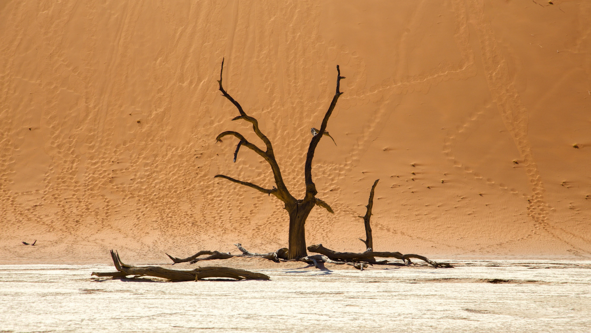
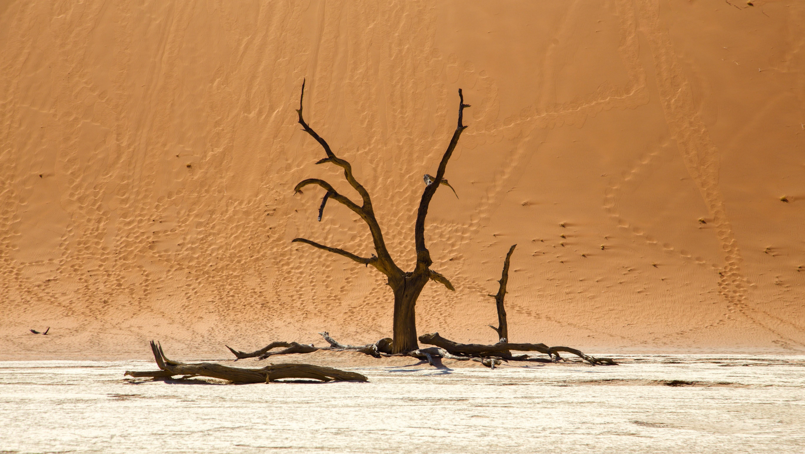

THE SAHARA TRAVEL GUIDE
The Sahara is...
Best experienced from a Beduoin desert camp – sleeping on the sand next to the cooling embers of a campfire comes highly recommended. Mr Sandman, bring me a dream. The Sahara isn’t... A walk in the park. Expect a long drive to reach the edge of the desert, unmade roads and no shade to speak of.What does visiting the Sahara entail?
So go on, we hear you ask, how do I visit the middle of nowhere? Well, first of all, most tours don’t just magically drop you in the middle of the desert. It takes time to reach the Sahara proper from civilisation – which means a long drive to the gateway towns that sit precipitously on the desert’s edge. To get to Chinguetti, Mauritania, for instance, it’s 65km from the nearest town on unmade road. The most popular, accessible place from which to reach the edge of the desert is in Morocco. You can drive from Marrakech to Merzouga or M’Hamid in a day to see the Moroccan Sahara. Most tours will probably let you spend a few days in Marrakech, before heading up the Draa valley – as a small group, or in a tailor made tour, stopping at interesting settlements along the way. Once you reach the famous sand seas, you’ll spend maybe one night in a desert camp, before heading back.
 

Is It Safe?
The Sahara’s sand trickles into dangerous territories like Libya, where you can’t currently travel. Some of the Sahara’s most cinematic scenery is in Tunisia – the field of sand dunes known as the Grand Erg Oriental, and even abandoned Star Wars sets can be found here. Following the 2015 terrorist attack, though, a state of emergency has been in effect in Tunisia and in the UK, the FCO advises against travel to many areas. The Western Sahara is a disputed region, and the FCO currently also advises against travel to much of it. However, specialist small group tours do enter the region from Morocco.
The Sahara is one cheap map to make, as there are very few landmarks plotted on its surface.
The Sahara’s ‘highlights’ are all on its edges: little towns are like drawing pins, stretching out a blank canvas of deserted desert between them.
These ‘last towns before the desert’ feature sand-drowned stone houses, squat, square mosques and ancient ksars (fortified old towns).
In the desert itself you’ll find some surprising features.
Rolling sand seas (ergs) make up 25 percent of the Sahara, low-lying oases provide brief areas of habitable land , whilst huge elevations, like Chad’s Ennedi Plateau and Tibesti mountains, add dramatic topography.